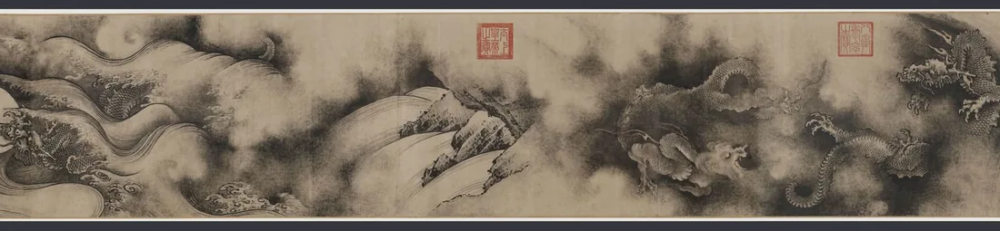

导 览
先看图：23 个故事，落在金陵城的 14 处地标上（示意图，方位为大致相对位置）

南宋 · 陈容《九龙图》长卷（龙纹局部）
成 语 集
23 则典故一览——可筛选、可点击，点卡片跳到详解
年代
类型
详 解
来龙去脉 → 原文溯源 → 本义今义 → 记忆锦囊 → 今日寻踪
记 忆 工 坊
翻转记忆卡自测，口诀表帮忙“顺口记住”
翻转记忆卡
正面看成语 → 心里默想故事 → 点击翻面核对记忆锦囊
口诀总表（23 则）
小 测 验
十道题，检验一下“来龙去脉”记住了多少
已答 0 / 10 · 答对 0
溯 源
每一条都注明出处；图片均来自 Wikimedia Commons 开放资源
参考来源
图片版权
| 图片 | 作者 | 许可 |
|---|
以上图片均来自 Wikimedia Commons，遵循各自标注的开放许可（CC BY / CC BY-SA / CC0 / 公有领域）。本页为学习交流用途，如需转载引用请一并保留作者与许可信息。
编撰小记
① 本页所称“源出南京”，指成语典故的核心情节或定型文献与南京（金陵）直接相关；个别条目（如“东山再起”“入木三分”）学界对具体地点另有讨论，条目内已作说明。② 引文以原典及权威辞书为准，白话叙述为编者转写，不作逐字对译。③ “青梅竹马”“两小无猜”出自李白诗，“乌衣巷”“桃叶渡”属地名典故——本页将成语与典故并录。④ 因部分古迹已湮没，配图选用相关实景、文物与名画；每张图片均标注其真实内容，不以后代景观冒充原址。⑤ 若发现疏漏，欢迎指正——金陵故事，越讲越明。
① 本页所称“源出南京”，指成语典故的核心情节或定型文献与南京（金陵）直接相关；个别条目（如“东山再起”“入木三分”）学界对具体地点另有讨论，条目内已作说明。② 引文以原典及权威辞书为准，白话叙述为编者转写，不作逐字对译。③ “青梅竹马”“两小无猜”出自李白诗，“乌衣巷”“桃叶渡”属地名典故——本页将成语与典故并录。④ 因部分古迹已湮没，配图选用相关实景、文物与名画；每张图片均标注其真实内容，不以后代景观冒充原址。⑤ 若发现疏漏，欢迎指正——金陵故事，越讲越明。